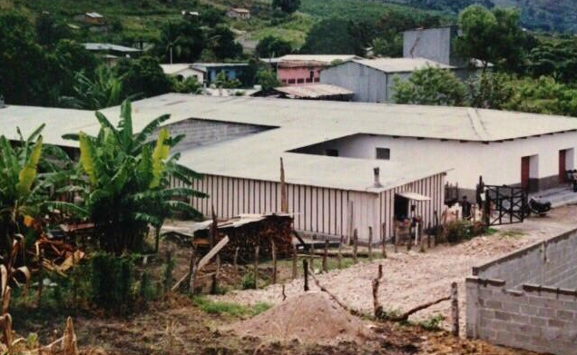
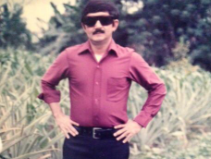
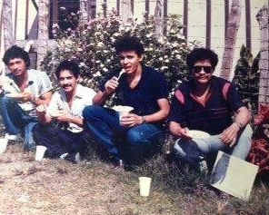
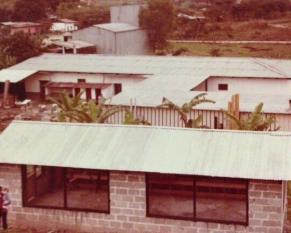
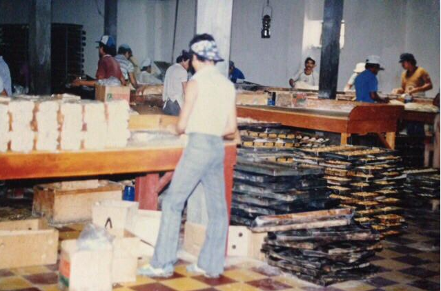
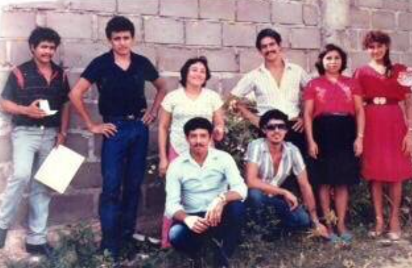
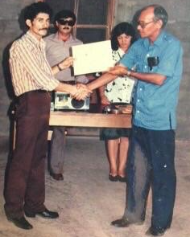
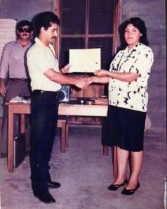
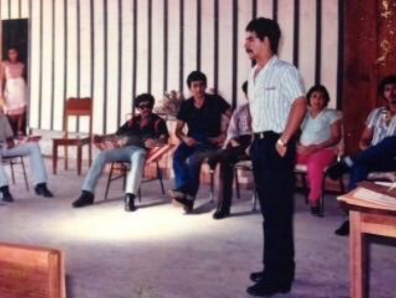

Bajo un árbol conocido como “Ceibón” se gestó la idea de fundar una empresa exitosa. Don José Amancio López Cartagena tuvo una idea que le dio vueltas en su cabeza durante mucho tiempo y era la de fundar una pequeña empresa panificadora: era su sueño más caro. Durante uno de sus viajes por San Pedro Sula y con la ayuda de un vendedor que se ofreció a apoyarle, don Amancio dio forma al proyecto de su vida, mismo que no tuvo el inicio que esperaba, sobre todo porque San Pedro Sula no ofrecía en ese momento las mejores condiciones para comenzar las operaciones. Obtuvo algunas fórmulas de elaboración de pan (el polvorón fue la primera de estas fórmulas) y con esta información se decidió a montar su panadería.

Los consejos sobre donde iniciar la empresa tuvo diferentes orientaciones, pero al final, al regreso de un viaje de El Salvador, don Amancio se radicó en la Entrada Copan, alquilando un pequeño predio lleno de malva. Era un local que contaba con un horno de leña, un piso de balastre y muy poca protección contra el ambiente.



Un 15 de septiembre de 1981 vio nacer aquella pequeña empresa con un capital de apenas 1,500.00 lempiras, un carro tipo pick-up y muchas esperanzas. En los comienzos, se producía pan con apenas un quintal diario saliendo al mercado por 3 veces a la semana. En el inicio de las operaciones todo el personal con que contaba la panificadora era solamente don Amancio y un panadero. Otro vendedor que conocía la región se dedicaba a comercializar el producto. La pequeña panadería fue creciendo y al cabo de 3 años, producía pan con 9 quintales y con un gran esfuerzo se compraron algunos solares y se construyó la primera parte de lo que serían las instalaciones de la empresa. Incluso don Amancio tuvo que vender su carro para terminar la primera parte de la panificadora. Para septiembre de 1982 se adquiere el primer camión y en febrero del año 1984 se compra el segundo automóvil, un Pick-up para complementar la distribución. Debemos mencionar que debido a que la competencia de las panificadoras sampedranas era muy fuerte, don Amancio decidió hacer la distribución del producto en los lugares menos accesibles, es decir, en comunidades de montaña. El pan desde luego, no era de la mejor calidad.

El año de 1987 quizá sea el año del despunte de la empresa. Se adquiere una planta eléctrica, dado que la ciudad no contaba con energía eléctrica de la ENEE. Así se sustituían las viejas lámparas de gas tipo Coleman. También se adquieren las primeras máquinas batidoras. El trabajo era arduo y el tiempo de operación se extendía hasta 18 horas continuas. La primera revolvedora de pan se consiguió en una recuperadora de metales en San Pedro Sula.
Para finales de 1987, se pagan las primeras dos primas de dos camiones marca TOYOTA, pero solamente se entrega uno de los mismos y hubo que esperar hasta 6 meses después (en 1988) para que se formalizara la entrega del segundo camión. Con el tiempo se obtienen más camiones para fortalecer la flota con que se cuenta hoy en día.

Inspirados por la oportunidad de crecimiento y en busca de mejorar la calidad de los productos que consumimos los hondureños en el año 2012 la muy conocida empresa panificadora Pan Hawit se unió a la cartera de marcas de PANIFICADORA LA POPULAR; en el año 2019 Pan Bambino, una empresa del mismo rubro cuyo papel en la vida de los hondureños ha sido significativa y nostálgica siguió el mismo camino. Hoy en día se cuenta con dos sucursales más, diferentes Salas de Venta y una amplia cobertura a nivel nacional. No todo fue tan simple como lo relatamos en este espacio. Hubo momentos de tensión, sobre todo como producto de problemas encontrados con personas que se oponían a ver crecer la empresa.


PANIFICADORA LA POPULAR ha sido y sigue siendo un ejemplo de éxito empresarial, pero también humano. Nos enseña que, cuando las personas se proponen una meta, esta se alcanza sobre la base del sacrificio, la confianza en uno mismo y la paciencia fructífera. Tal es el camino que tuvo que seguir la empresa y su fundador desde aquel memorable 16 de septiembre de 1981 con apenas pocos recursos y muchas ganas de por medio. PANIFICADORA LA POPULAR es el semillero de muchos panificadores que han aprendido el noble arte de convertir la harina de trigo, en alimento sano para las mesas de miles de familias hondureñas.
